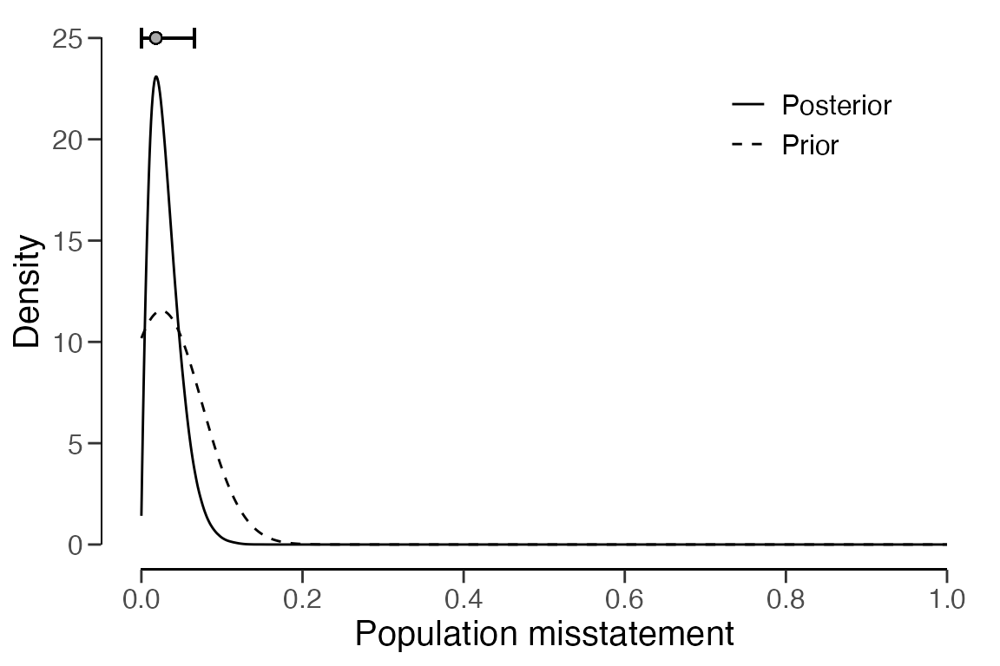
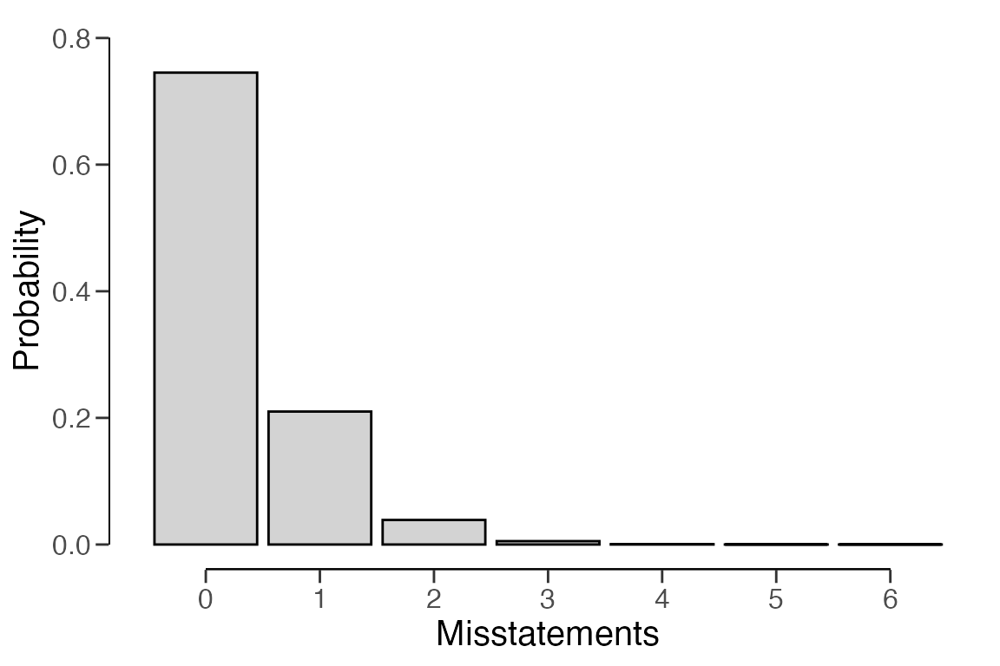

Creating a prior distribution for audit sampling
Koen Derks
Source:vignettes/articles/creating-prior.Rmd
creating-prior.RmdIntroduction
This vignette will walk you through the process of setting up a prior
distribution for audit sampling using the auditPrior()
function in the jfa package.
The power of Bayesian statistics lies in its ability to incorporate pre-existing information about the misstatement into the sampling procedure through the prior distribution. Once data is observed, the prior information is updated to draw an overall conclusion about the misstatement in the population. The use of a prior distribution has the advantage of making the underlying assumptions explicit, potentially reducing the amount of audit work needed to achieve the desired assurance. The type of information that can be incorporated into the prior distribution depends on the availability and quality of the information, as well as the specifics of the audit.
For example, if you have information from the auditee’s internal control systems indicating well-segregated duties and numerous effective controls in place, this suggests a relatively low probability of misstatement. This risk-mitigating information can be incorporated into the prior distribution, thereby lessening the need for evidence from the sample. It is important to note that all information integrated into the prior distribution should be substantiated with appropriate and sufficient audit evidence. Specifically, the auditor should be able to justifying the translation of audit information into a prior distribution. This vignette addresses this issue.
Creating a prior distribution
The auditPrior() function is used to define a prior
distribution for audit sampling. The following are various ways this
function can be used to construct a prior distribution.
Default priors
The default prior distributions in jfa are specified
using method = 'default'. These default priors meet two
criteria: 1) they hold relatively minimal information about the
population misstatement, and 2) they are proper, meaning they integrate
to one.
-
likelihood = 'poisson': gamma(\(\alpha\) = 1, \(\beta\) = 1) -
likelihood = 'binomial': beta(\(\alpha\) = 1, \(\beta\) = 1) -
likelihood = 'hypergeometric': beta-binomial(N, \(\alpha\) = 1, \(\beta\) = 1) -
likelihood = 'normal': normal(\(\mu\) = 0, \(\sigma\) = 1000) -
likelihood = 'uniform': uniform(min = 0, max = 1) -
likelihood = 'cauchy': Cauchy(\(x_0\) = 0, \(\gamma\) = 1000) -
likelihood = 't': Student-t(df = 1) -
likelihood = 'chisq': chi-squared(df = 1) -
likelihood = 'exponential': exponential(\(\lambda\) = 1)
prior <- auditPrior(method = "default", likelihood = "binomial")
summary(prior)##
## Prior Distribution Summary
##
## Options:
## Likelihood: binomial
## Specifics: default prior
##
## Results:
## Functional form: beta(α = 1, β = 1)
## Mode: NaN
## Mean: 0.5
## Median: 0.5
## Variance: 0.083333
## Skewness: 0
## Information entropy (nat): 0
## 95 percent upper bound: 0.95
## Precision: NaNAfter setting up the prior distribution, you can visually examine it
using the plot() function.
plot(prior)
Additionally, the predict() function generates the
predictions of the prior distribution at the data level for a sample of
\(n\) items. For instance, the command
below calls for the prediction of the default beta(1, 1) prior for a
hypothetical sample of \(n\) = 6
items.
predict(prior, n = 6)## x=0 x=1 x=2 x=3 x=4 x=5 x=6
## 0.1428571 0.1428571 0.1428571 0.1428571 0.1428571 0.1428571 0.1428571You can visualize the predictions of the prior distribution using the
plot() function.

Priors with custom parameters
You can manually set the parameters of the prior distribution using
method = 'param' along with the alpha and
beta arguments. These correspond to the first and
(optionally) second parameter of the prior distribution as shown in the
default prior section. For instance, the commands below will create a
beta(2, 10) prior distribution, a normal(0.025, 0.05) prior
distribution, and a Student-t(0.01) prior distribution.
auditPrior(method = "param", likelihood = "binomial", alpha = 2, beta = 10)##
## Prior Distribution for Audit Sampling
##
## functional form: beta(α = 2, β = 10)
## parameters obtained via method 'param'
auditPrior(method = "param", likelihood = "normal", alpha = 0.025, beta = 0.05)##
## Prior Distribution for Audit Sampling
##
## functional form: normal(μ = 0.025, σ = 0.05)T[0,1]
## parameters obtained via method 'param'
auditPrior(method = "param", likelihood = "t", alpha = 0.01)##
## Prior Distribution for Audit Sampling
##
## functional form: Student-t(df = 0.01)T[0,1]
## parameters obtained via method 'param'Improper priors
An improper prior distribution with classical properties can be
constructed using method = 'strict'. The posterior
distribution from this prior produces the same results as the classical
methodology in terms of sample sizes and upper limits. However, it only
becomes proper once a single non-misstated item is present in the sample
(Derks et al., 2022). The command below
creates an improper beta(1, 0) prior distribution.
Note: This method requires the poisson,
binomial, or hypergeometric
likelihood.
auditPrior(method = "strict", likelihood = "binomial")##
## Prior Distribution for Audit Sampling
##
## functional form: beta(α = 1, β = 0)
## parameters obtained via method 'strict'Impartial priors
To incorporate the assumption that tolerable misstatement is equally
likely as intolerable misstatement (Derks et al.,
2022), you can use method = 'impartial'. For
instance, the command below generates an impartial beta prior
distribution for a performance materiality of five percent.
Note: This method requires a value for the
materiality and the poisson,
binomial, or hypergeometric
likelihood.
auditPrior(method = "impartial", likelihood = "binomial", materiality = 0.05)##
## Prior Distribution for Audit Sampling
##
## functional form: beta(α = 1, β = 13.513)
## parameters obtained via method 'impartial'Priors based on risk of material misstatement
To manually set prior probabilities for the hypothesis of tolerable
misstatement and the hypotheses of intolerable misstatement (Derks et al., 2021), you can use
method = 'hyp' in conjunction with the p.hmin
argument. For instance, the command below integrates the information
that the hypothesis of intolerable misstatement has a 40 percent
probability into a beta prior distribution. This is equal to setting the
risk of material misstatement (RMM) to 40 percent.
Note: This method requires a value for the
materiality and the poisson,
binomial, or hypergeometric
likelihood.
auditPrior(method = "hyp", likelihood = "binomial", materiality = 0.05, p.hmin = 1 - 0.4)##
## Prior Distribution for Audit Sampling
##
## functional form: beta(α = 1, β = 17.864)
## parameters obtained via method 'hyp'Priors based on the Audit Risk Model
To convert risk assessments from the Audit Risk Model, including
inherent risk and internal control risk, into a prior distribution (Derks et al., 2021), you can use
method = 'arm' along with the ir and
cr arguments. For instance, the command below integrates
the information that the inherent risk is 90 percent and the internal
control risk is 60 percent into a beta prior distribution.
Note: This method requires the poisson,
binomial, or hypergeometric
likelihood.
auditPrior(method = "arm", likelihood = "binomial", materiality = 0.05, ir = 0.9, cr = 0.6)##
## Prior Distribution for Audit Sampling
##
## functional form: beta(α = 1, β = 12)
## parameters obtained via method 'arm'Priors based on the Bayesian Risk Assessment Model
Incorporating information about the most likely value and the upper
limit of the population misstatement can be done using
method = 'bram'. For instance, the following code
demonstrates how to embed the information that the most likely
misstatement in the population is one percent and the 95 percent upper
limit on this misstatement is 60 percent into a beta prior
distribution.
Note: This method requires the poisson,
binomial, or hypergeometric
likelihood.
auditPrior(method = "bram", likelihood = "binomial", expected = 0.01, materiality = 0.05, ub = 0.6)##
## Prior Distribution for Audit Sampling
##
## functional form: beta(α = 1.023, β = 3.317)
## parameters obtained via method 'bram'Priors based on an earlier sample
You can use the method = 'sample' along with the
x and n arguments to integrate information
from an earlier sample into the prior distribution (Derks et al., 2021). For instance, the code
below demonstrates how to include the data from a previous sample of
\(n\) = 30 items where \(k\) = 0 misstatements were detected into a
beta prior distribution.
Note: This method requires the poisson,
binomial, or hypergeometric
likelihood.
auditPrior(method = "sample", likelihood = "binomial", x = 0, n = 30)##
## Prior Distribution for Audit Sampling
##
## functional form: beta(α = 1, β = 30)
## parameters obtained via method 'sample'Priors based on a weighted earlier sample
You can integrate information from the previous year’s results,
adjusted by a factor (Derks et al., 2021),
into the prior distribution using method = 'factor' in
conjunction with the x and n arguments. For
instance, the code below demonstrates how to include the data from the
previous year’s results (i.e., a sample of \(n\) = 58 items with \(k\) = 0 misstatements found), weighed by a
factor of 0.7, into a beta prior distribution. This weighting factor of
0.7 could be derived from the fact that 70 percent of the auditee’s
contracts are with businesses that have remained unchanged over the
years, implying that last year’s population is for 70 percent comparable
to the population of this year.
Note: This method requires the poisson,
binomial, or hypergeometric
likelihood.
auditPrior(method = "factor", likelihood = "binomial", x = 0, n = 58, factor = 0.7)##
## Prior Distribution for Audit Sampling
##
## functional form: beta(α = 1, β = 40.6)
## parameters obtained via method 'factor'Nonparametric prior distributions
You can establish the prior based on samples from the prior
distribution using method = 'nonparam' along with the
samples argument. For instance, the code below sets up a
prior based on 1000 samples from a beta(1, 10) distribution.
Note: The likelihood argument is not required and
will be ignored in this method.
auditPrior(method = "nonparam", samples = rbeta(1000, 1, 10))##
## Prior Distribution for Audit Sampling
##
## functional form: Nonparametric
## parameters obtained via method 'nonparam'Using a prior distribution
The objects returned by the auditPrior() function can be
used as input for the prior argument in both the
planning() and evaluation() functions. Here
follows a brief demonstration of how to construct the prior distribution
using these functions.
Planning a sample
The prior distribution can be employed during the planning stage to
compute a minimum sample size. This is done by supplying the object
returned by the auditPrior() function to the
planning() function via its prior argument.
For instance, the command below calculates the minimum sample size
required to test the misstatement in the population against a
performance materiality of five percent, using a beta(1, 10) prior
distribution. The resulting sample size is \(n\) = 49.
prior <- auditPrior(method = "param", likelihood = "binomial", alpha = 1, beta = 10)
planning(materiality = 0.05, likelihood = "binomial", prior = prior)##
## Bayesian Audit Sample Planning
##
## minimum sample size = 49
## sample size obtained in 50 iterations via method 'binomial' + 'prior'Evaluating a sample
The prior distribution can also be used during the evaluation stage
by providing the object returned by the auditPrior()
function to the evaluation() function via its
prior argument. For example, the command below evaluates
the misstatement in the population with respect to a performance
materiality of five percent after observing a sample of \(n\) = 60 items with \(k\) = 1 misstatement, using a Normal(0.025,
0.05) prior distribution.
prior <- auditPrior(method = "param", likelihood = "normal", alpha = 0.025, beta = 0.05)
eval <- evaluation(materiality = 0.05, x = 1, n = 60, prior = prior)
summary(eval)##
## Bayesian Audit Sample Evaluation Summary
##
## Options:
## Confidence level: 0.95
## Materiality: 0.05
## Hypotheses: H₀: Θ > 0.05 vs. H₁: Θ < 0.05
## Method: poisson
## Prior distribution: normal(μ = 0.025, σ = 0.05)T[0,1]
##
## Data:
## Sample size: 60
## Number of errors: 1
## Sum of taints: 1
##
## Results:
## Posterior distribution: Nonparametric
## Most likely error: 0.016
## 95 percent credible interval: [0, 0.067]
## Precision: 0.051
## BF₁₀: 4.8148The prior and posterior distribution can be visualized by calling
plot(..., type = "posterior").
plot(eval, type = "posterior")
Furthermore, the predictions of the posterior distribution at the
data level can be visualized by combining the predict() and
plot() functions. For instance, the command below displays
the predictions of the posterior distribution for a hypothetical (next)
sample of \(n\) = 10 items.
